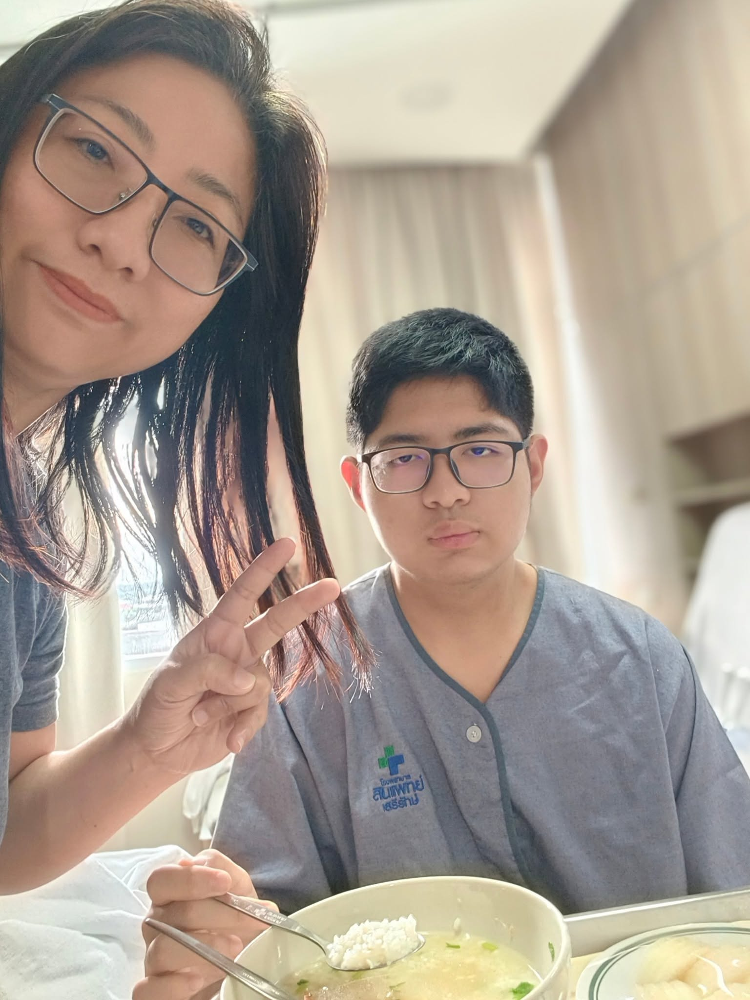

Happy Mother’s Day, Mom! Thank you for your endless love, patience, and constant support. This site is a little place dedicated to celebrating you.
Thanks for putting up with me over the years, teaching me how things work, and making sure I stayed on the right track.
ขอบคุณสำหรับการสั่งสอนทั้งหมด และขอโทษที่บางครั้งผมทำตัวไม่ดีกับคุณแม่ แต่ผมอยากให้คุณแม่รู้ว่าผมรักคุณแม่มากๆครับ และผมพยายามที่จะเป็นคนที่ดีขึ้นในทุกๆวันครับ
No matter how busy life gets, I am always thankful for your meals, advice, and quiet support.

Love you always, Mom ❤️